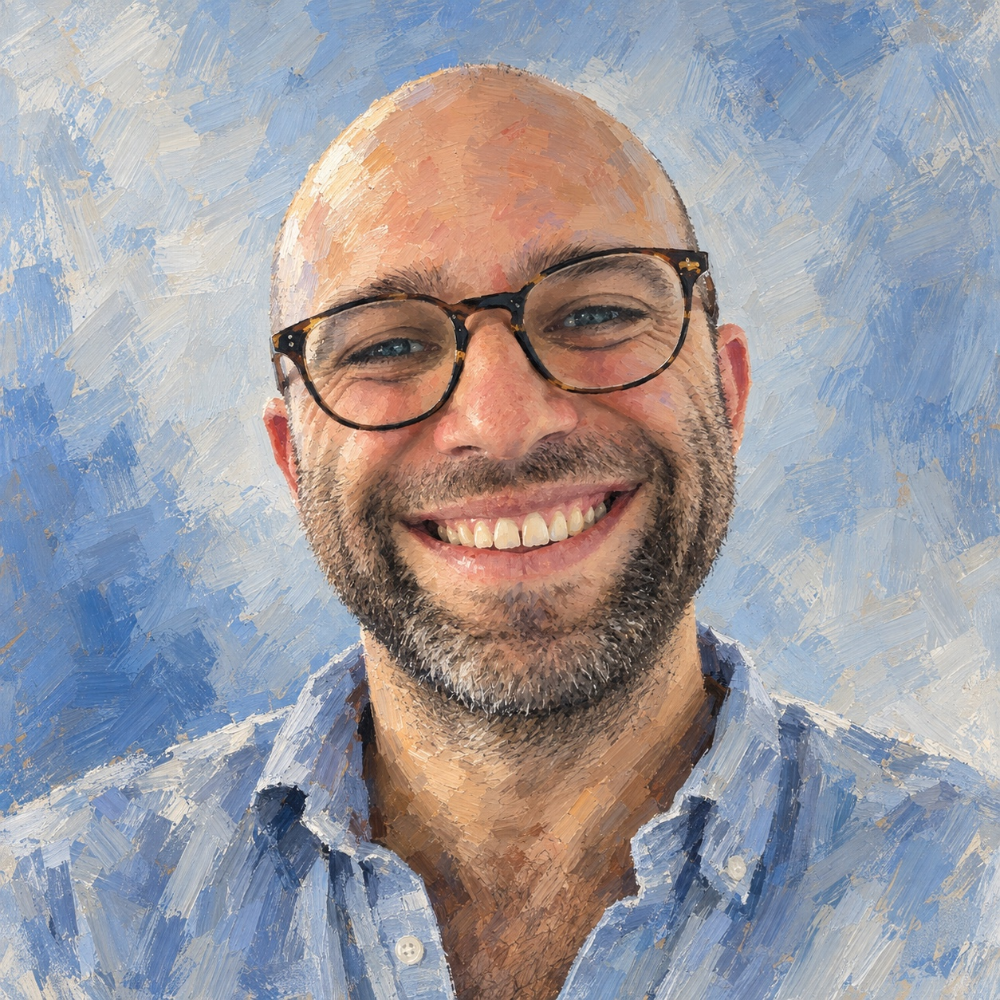
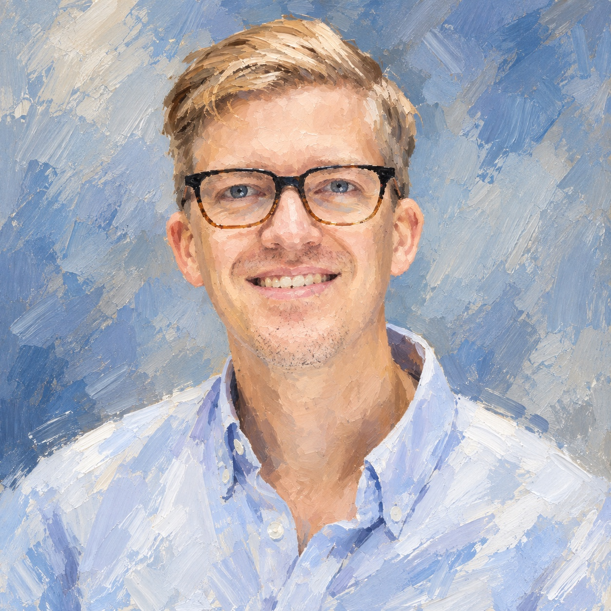
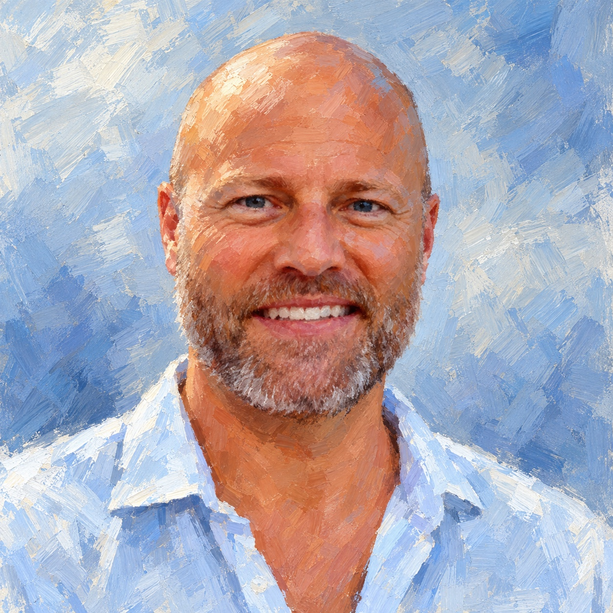

Guy St. Amant
A scholar of Sanskrit and Indian religions and former Princeton postdoctoral fellow. He has more than a decade of university teaching experience.
Yoga in Context is a public education initiative led by scholars of South Asian religions and experienced practitioners. We are developing programs that make scholarly perspectives on yoga and meditation available to people outside universities.
With donor support, we will offer lectures, films, and reading guides freely to individuals and community organizations.
Studying the history of yoga and meditation changes how we understand the practices we encounter today. We can examine when an idea emerged and how its meaning changed over time.
Consider the Yoga Sūtras. Teachers and practitioners often refer to the eight limbs, but how do those practices fit into the text’s account of meditation and liberation? How have traditional scholars interpreted them? How did the text acquire its place in contemporary yoga?
These questions deserve careful explanation. Our programs will introduce the evidence, explain competing interpretations, and give participants the means to pursue further study.
We envision a freely accessible collection of programs on yoga and meditation, drawing on Hindu and Buddhist texts and their histories.
Participants will be able to study independently, attend a talk, or join a discussion hosted by a local organization. Studios and meditation communities will be able to use the programs with their members. Libraries and museums will be able to offer them to wider audiences.
The programs will combine clear explanation with close attention to sources. Short introductions will give newcomers a place to begin, while longer programs and reading guides will allow sustained study.

A scholar of Sanskrit and Indian religions and former Princeton postdoctoral fellow. He has more than a decade of university teaching experience.

A scholar of South Asian religions with a PhD from Columbia University. He previously directed Columbia’s South Asian Studies MA program.

A longtime meditation practitioner with an MBA and experience in business and nonprofit governance.
Early support will fund the research, writing, and production of our first programs, including compensation for the scholars developing and presenting them.
Your support will make those programs available without participant fees and help us work with organizations that can bring them to their communities.
We welcome conversations with prospective donors about the first programs and the funding needed to produce them.